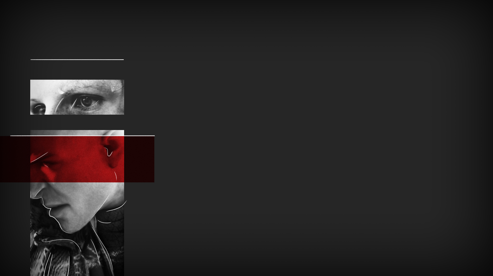

SPLITTED
SPLITTED

«Why do you ask me this?»
«Because I saw it already. I want to know why you have it on you.»
As soon as I finish my sentence, he starts again, just as yesterday. His already light pupils turn to white, and his eyes start trembling. I can see now, being closer than yesterday, that his skin also become pale, and some light sweat drops begin to form on his forehead. It looks like a physical reaction to which I have no explanation, something he is not capable of controlling.
«Don't...»
And again, the unclear words.